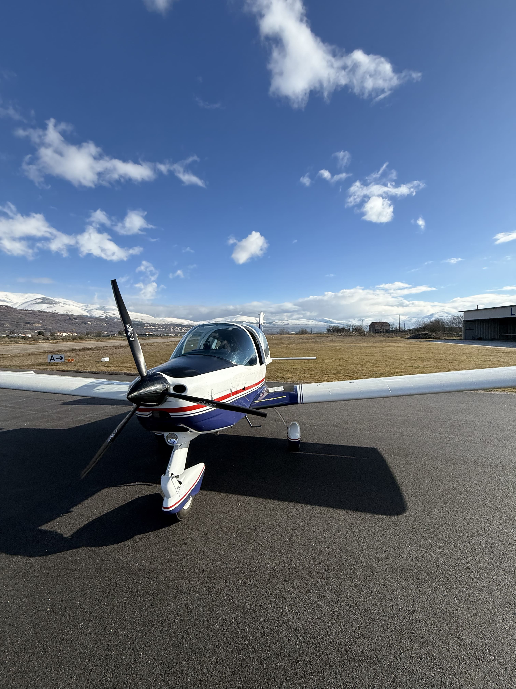

Area Soci
L'Area Soci è dedicata ai membri dell'Aeroclub dei Marsi e raccoglie tutte le informazioni utili per tesseramento, servizi riservati e prenotazioni.
Tesseramento
Diventare socio dell'Aeroclub dei Marsi significa entrare a far parte di una comunità di appassionati di aviazione e accedere a numerosi vantaggi esclusivi.
Tipologie di Tesseramento
- Socio Ordinario: per chi desidera partecipare alle attività sociali e usufruire dei servizi dell'Aeroclub
- Socio Pilota: per i piloti brevettati, con accesso ai velivoli sociali (previo check-out)
- Socio Allievo Pilota: per chi frequenta la scuola di volo
Vantaggi per i Soci
- Accesso alla clubhouse
- Partecipazione agli eventi sociali
- Condizioni agevolate per i corsi di volo
- Possibilità di noleggiare i velivoli sociali (per i soci piloti)
- Accesso al sistema di prenotazione online
- Accesso esclusivo all'ATC Trainer Aeroclub dei Marsi
- Partecipazione alle assemblee sociali
- Newsletter e aggiornamenti sulle attività
Come Associarsi
- Compila il modulo di iscrizione (disponibile presso la sede)
- Presenta un documento di identità valido
- Effettua il pagamento della quota associativa
- Ricevi la tua tessera sociale
Quote associative: per informazioni, contattaci direttamente.
Clubhouse
La clubhouse dell'Aeroclub dei Marsi è il cuore della vita sociale dell'associazione: piccola ma accogliente, è il luogo dove la comunità dell'aviosuperficie si ritrova e prende forma.
Nelle belle giornate è normale vederla animata: pranzi conviviali tra soci, briefing pre-volo condivisi al tavolo, racconti del volo appena fatto, scambio di esperienze tra piloti esperti e allievi alle prime ore. Non c'è un calendario rigido — le occasioni nascono spontanee, intorno al cielo sereno e all'attività di volo della giornata.
È uno spazio attrezzato per la pianificazione (consultazione meteo e NOTAM, sala briefing) e per la vita sociale. Ma più dei servizi, è l'atmosfera che la rende il punto di riferimento dell'Aeroclub.
Orari di Apertura
- Weekend: generalmente aperta nelle ore di luce, in coincidenza con le attività di volo
- Giorni feriali: su appuntamento e durante le attività programmate
Prenotazione P96
🛩️ Tecnam P96 Golf
I soci piloti possono prenotare il Tecnam P96 Golf I-6195 attraverso il sistema di prenotazione online, che permette di:
- Visualizzare la disponibilità del velivolo
- Prenotare slot di volo
- Gestire le proprie prenotazioni
- Consultare il registro di volo
Si apre in una nuova finestra. Necessario essere soci piloti con check-out sul velivolo.

ATC Trainer Aeroclub dei Marsi
📻 Esercitati nella fonia VFR
Strumento didattico multiplayer per esercitarsi nella fraseologia radio VFR italiana e inglese ICAO, sviluppato per il corso "Avanzato" e per il corso di "Radiofonia" dell'Aeroclub dei Marsi.
Il simulatore permette di:
- Praticare la sequenza dei contatti radio (Ground · Tower · Approach) dalle piste reali di Pescara LIBP e Celano LIAH
- Esercitarsi con il Push-To-Talk: un solo trasmettitore alla volta, come in radio vera
- Gestire scenari di traffico misto, autorizzazioni condizionate e wake turbulence
- Allenarsi sia in italiano sia in fraseologia ICAO in inglese
- Partecipare a sessioni in tempo reale con istruttore e altri allievi
Si apre in una nuova finestra. Per il Push-To-Talk è necessario consentire l'accesso al microfono al primo utilizzo. Strumento didattico — non utilizzare durante le operazioni di volo reali.
Vuoi diventare socio? Contattaci per ricevere il modulo di iscrizione e tutte le informazioni necessarie!
Contattaci